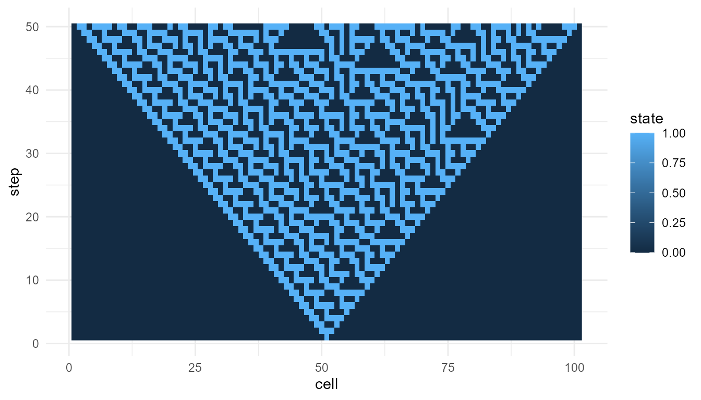
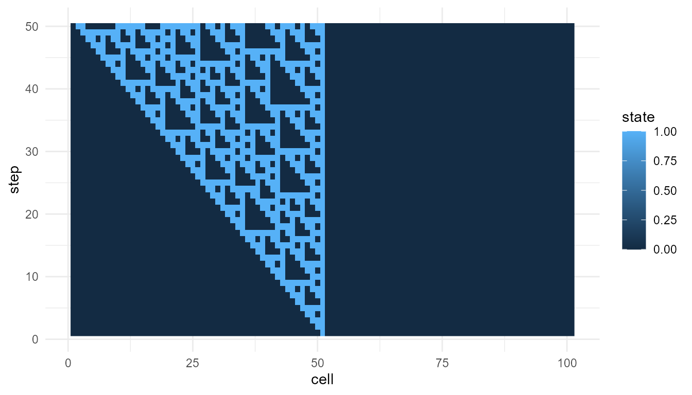

Measuring Emergence Tutorial
Source:vignettes/measuring-emergence-tutorial.Rmd
measuring-emergence-tutorial.RmdPurpose
This tutorial introduces measure_emergence(), a helper
function for summarizing outputs from the simulation functions in
emergenceModelR.
Measuring emergence is difficult because emergence is not a single variable. It may involve diversity, variability, organization, novelty, temporal change, or multi-level structure.
For this reason, measure_emergence() should be
interpreted as an educational summary tool, not as a universal emergence
score.
In this tutorial, you will learn how to:
- measure a cellular automaton output;
- measure a self-organization output;
- measure agent movement;
- measure network degree history;
- compare metrics across model runs;
- interpret the output responsibly.
What the function does
measure_emergence() summarizes a selected value column
over time.
The two most important arguments are:
| Argument | Meaning |
|---|---|
value_col |
The column containing the values to summarize |
time_col |
The column representing time steps |
Depending on the input data, the function may summarize:
- number of observations;
- number of unique values;
- Shannon entropy;
- mean value;
- standard deviation;
- temporal variability;
- mean absolute change over time.
These metrics help describe the simulation output, but they do not fully define emergence.
Measure a cellular automaton
Start with a cellular automaton. In this model, the main value column
is state.
ca <- simulate_cellular_automata(
rule = 30,
steps = 50
)
head(ca)
#> step cell state
#> 1 1 1 0
#> 2 1 2 0
#> 3 1 3 0
#> 4 1 4 0
#> 5 1 5 0
#> 6 1 6 0
measure_emergence(
ca,
value_col = "state",
time_col = "step"
)
#> n unique_states shannon_entropy mean_value sd_value temporal_variability
#> 1 5050 2 0.8335416 0.2645545 0.4411394 0.1505025
#> mean_absolute_change
#> 1 0.0585977Interpretation
For cellular automata, the metrics summarize the distribution and change of cell states over time.
A careful interpretation is:
The metrics summarize diversity and temporal change in the cellular automaton pattern.
An overstatement would be:
The metrics fully measure emergence.
The first statement is appropriate. The second is too strong.
Visualize before interpreting
Metrics are easier to interpret when combined with plots.
plot_emergence_sim(
ca,
x = "cell",
y = "step",
value = "state",
type = "raster"
)
The plot shows the space-time pattern. The metrics summarize aspects of that pattern.
Neither the plot nor the metrics alone gives a complete theory of emergence. They work best together.
Compare two cellular automaton rules
Metrics are most useful when comparing similar model outputs.
ca_30 <- simulate_cellular_automata(
rule = 30,
steps = 50
)
ca_110 <- simulate_cellular_automata(
rule = 110,
steps = 50
)
rbind(
rule_30 = measure_emergence(
ca_30,
value_col = "state",
time_col = "step"
),
rule_110 = measure_emergence(
ca_110,
value_col = "state",
time_col = "step"
)
)
#> n unique_states shannon_entropy mean_value sd_value
#> rule_30 5050 2 0.8335416 0.2645545 0.4411394
#> rule_110 5050 2 0.6061112 0.1485149 0.3556448
#> temporal_variability mean_absolute_change
#> rule_30 0.15050249 0.05859770
#> rule_110 0.08223164 0.02667205Interpretation of rule comparison
Because both outputs come from the same model family, the comparison is relatively meaningful.
Any differences in the metrics may reflect how different local rules generate different global patterns. However, the comparison should still be supported by visualization.
plot_emergence_sim(
ca_110,
x = "cell",
y = "step",
value = "state",
type = "raster"
)
Measure a self-organizing grid
Now measure a self-organization model. In this model, the main value
column is value.
so <- simulate_self_organization(
steps = 30,
seed = 1
)
head(so)
#> step x y value
#> 1 1 1 1 0.2655087
#> 2 1 2 1 0.3721239
#> 3 1 3 1 0.5728534
#> 4 1 4 1 0.9082078
#> 5 1 5 1 0.2016819
#> 6 1 6 1 0.8983897
measure_emergence(
so,
value_col = "value",
time_col = "step"
)
#> n unique_states shannon_entropy mean_value sd_value temporal_variability
#> 1 27000 26944 14.71024 0.8443567 0.1351917 0.0945904
#> mean_absolute_change
#> 1 0.02201598Interpretation
For the self-organization model, the metrics summarize variation and change in grid values over time.
This is different from the cellular automaton example. The cellular automaton usually has binary states, while the self-organization model may produce continuous numeric values.
This means the results should not be compared mechanically. The meaning of the metric depends on the model.
Measure agent movement
Agent models produce positions over time. Here, we measure the
x position.
agents <- simulate_agent_interactions(
steps = 30,
seed = 1
)
head(agents)
#> step agent x y
#> 1 1 A1 0.2655087 0.47761962
#> 2 1 A2 0.3721239 0.86120948
#> 3 1 A3 0.5728534 0.43809711
#> 4 1 A4 0.9082078 0.24479728
#> 5 1 A5 0.2016819 0.07067905
#> 6 1 A6 0.8983897 0.09946616
measure_emergence(
agents,
value_col = "x",
time_col = "step"
)
#> n unique_states shannon_entropy mean_value sd_value temporal_variability
#> 1 1500 1484 10.50988 0.5197414 0.271721 0.009654211
#> mean_absolute_change
#> 1 0.002307986Interpretation
For agent movement, the metrics summarize variation and change in the selected position coordinate.
This does not measure the full collective behavior of the agent system. It only summarizes one selected variable.
A more complete interpretation may also examine:
-
yposition; - group center over time;
- spread among agents;
- clustering;
- alignment;
- visual trajectories.
Measure the group center
For agent models, it can be useful to summarize the group center first.
center <- aggregate(
cbind(x, y) ~ step,
data = agents,
FUN = mean
)
head(center)
#> step x y
#> 1 1 0.5325929 0.5031013
#> 2 2 0.5325314 0.5029745
#> 3 3 0.5332915 0.5030417
#> 4 4 0.5342440 0.5060901
#> 5 5 0.5305963 0.5070438
#> 6 6 0.5286053 0.5078233
measure_emergence(
center,
value_col = "x",
time_col = "step"
)
#> n unique_states shannon_entropy mean_value sd_value temporal_variability
#> 1 30 30 4.906891 0.5197414 0.009654211 0.009654211
#> mean_absolute_change
#> 1 0.002307986This summarizes change in the average group position, rather than change across all individual positions.
Measure network degree history
Network models produce degree history. Here, the main value column is
degree.
net <- simulate_network_growth(
n_nodes = 60,
m = 2,
mode = "preferential",
seed = 4
)
head(net$degree_history)
#> step node degree
#> 1 3 N1 2
#> 2 3 N2 2
#> 3 3 N3 2
#> 4 4 N1 2
#> 5 4 N2 3
#> 6 4 N3 3
measure_emergence(
net$degree_history,
value_col = "degree",
time_col = "step"
)
#> n unique_states shannon_entropy mean_value sd_value temporal_variability
#> 1 1827 11 2.594135 3.809524 2.110283 0.3590056
#> mean_absolute_change
#> 1 0.03333333Interpretation
For network growth, the metrics summarize variation and change in node degree over time.
A high standard deviation may indicate unequal connectivity. A high maximum degree may indicate hub formation.
However, the metric does not prove that one network is “more emergent.” It only summarizes the degree pattern.
Compare preferential and random networks
A useful comparison is preferential attachment versus random attachment.
pref_net <- simulate_network_growth(
n_nodes = 60,
m = 2,
mode = "preferential",
seed = 4
)
random_net <- simulate_network_growth(
n_nodes = 60,
m = 2,
mode = "random",
seed = 4
)
rbind(
preferential = measure_emergence(
pref_net$degree_history,
value_col = "degree",
time_col = "step"
),
random = measure_emergence(
random_net$degree_history,
value_col = "degree",
time_col = "step"
)
)
#> n unique_states shannon_entropy mean_value sd_value
#> preferential 1827 11 2.594135 3.809524 2.110283
#> random 1827 11 2.605490 3.809524 1.972388
#> temporal_variability mean_absolute_change
#> preferential 0.3590056 0.03333333
#> random 0.3590056 0.03333333Interpretation of network comparison
The two networks use the same number of nodes but different attachment rules.
Preferential attachment may produce more unequal degree distributions because well-connected nodes have a higher chance of receiving new links. Random attachment usually produces a different degree pattern.
The metrics help summarize the difference, but the interpretation depends on the theory of network growth.
Compare several model families
You can also place several model summaries into one table.
summary_table <- rbind(
cellular_automata = measure_emergence(
ca,
value_col = "state",
time_col = "step"
),
self_organization = measure_emergence(
so,
value_col = "value",
time_col = "step"
),
agents_x_position = measure_emergence(
agents,
value_col = "x",
time_col = "step"
),
network_degree = measure_emergence(
net$degree_history,
value_col = "degree",
time_col = "step"
)
)
summary_table
#> n unique_states shannon_entropy mean_value sd_value
#> cellular_automata 5050 2 0.8335416 0.2645545 0.4411394
#> self_organization 27000 26944 14.7102361 0.8443567 0.1351917
#> agents_x_position 1500 1484 10.5098781 0.5197414 0.2717210
#> network_degree 1827 11 2.5941353 3.8095238 2.1102828
#> temporal_variability mean_absolute_change
#> cellular_automata 0.150502494 0.058597697
#> self_organization 0.094590396 0.022015983
#> agents_x_position 0.009654211 0.002307986
#> network_degree 0.359005647 0.033333333Interpreting cross-model comparisons
This table is useful for orientation, but it should be interpreted carefully.
Each model uses a different kind of value:
| Model | Value column | Meaning |
|---|---|---|
| Cellular automata | state |
Binary cell state |
| Self-organization | value |
Grid value |
| Agent interactions | x |
Agent position |
| Network growth | degree |
Number of connections |
Because the value columns mean different things, the metrics do not have exactly the same interpretation across models.
It is usually better to compare metrics within the same model family before comparing across model families.
Good uses of measure_emergence()
The function is useful for:
- comparing two cellular automaton rules;
- comparing low and high diffusion settings;
- comparing weak and strong feedback settings;
- comparing agent movement under different alignment settings;
- comparing random and preferential network growth;
- summarizing large simulation outputs;
- supporting visual interpretation.
Poor uses of measure_emergence()
Avoid using the function to claim:
- that emergence has been fully measured;
- that one simulation proves real-world emergence;
- that entropy alone captures complexity;
- that a model creates life or consciousness;
- that a single number can replace interpretation.
The function provides helpful summaries, not final answers.
Suggested exercises
Try modifying the examples above.
experiment <- simulate_cellular_automata(
rule = 90,
steps = 50
)
measure_emergence(
experiment,
value_col = "state",
time_col = "step"
)
#> n unique_states shannon_entropy mean_value sd_value temporal_variability
#> 1 5050 2 0.4111854 0.08257426 0.2752649 0.06675167
#> mean_absolute_change
#> 1 0.05475854Questions to consider:
- How do the metrics change when you change the cellular automaton rule?
- How do metrics change when diffusion is higher or lower?
- How does network degree variation differ between random and preferential attachment?
- Do the metrics match what you see in the plots?
- What does each metric miss?
Responsible interpretation
It is better to say:
measure_emergence()summarizes selected features of a simulation output.
than:
measure_emergence()gives the true emergence score.
It is better to say:
Entropy and variability help compare model runs.
than:
Entropy and variability fully measure emergence.
Careful interpretation is important because emergence is a theoretical concept, not a single number.
Key takeaway
measure_emergence() helps users summarize and compare
simulation outputs. It is useful for describing diversity, variability,
and temporal change.
The function should be used as an interpretive aid. It works best when combined with visualization, model understanding, and careful theoretical explanation.